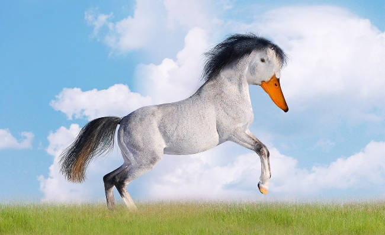

Olá, Patos!
quer dizer... Humanos!
Esse é o meu primeiro site e falarei sobre patos!
Patos de todos os tipos, todas as cores e todas as origens.
CUIDADO: Caro leitor, a imagem a seguir é de um pato extremamente peculiar, podendo causar alucinações, pesadelos e perturbações no leitor.
